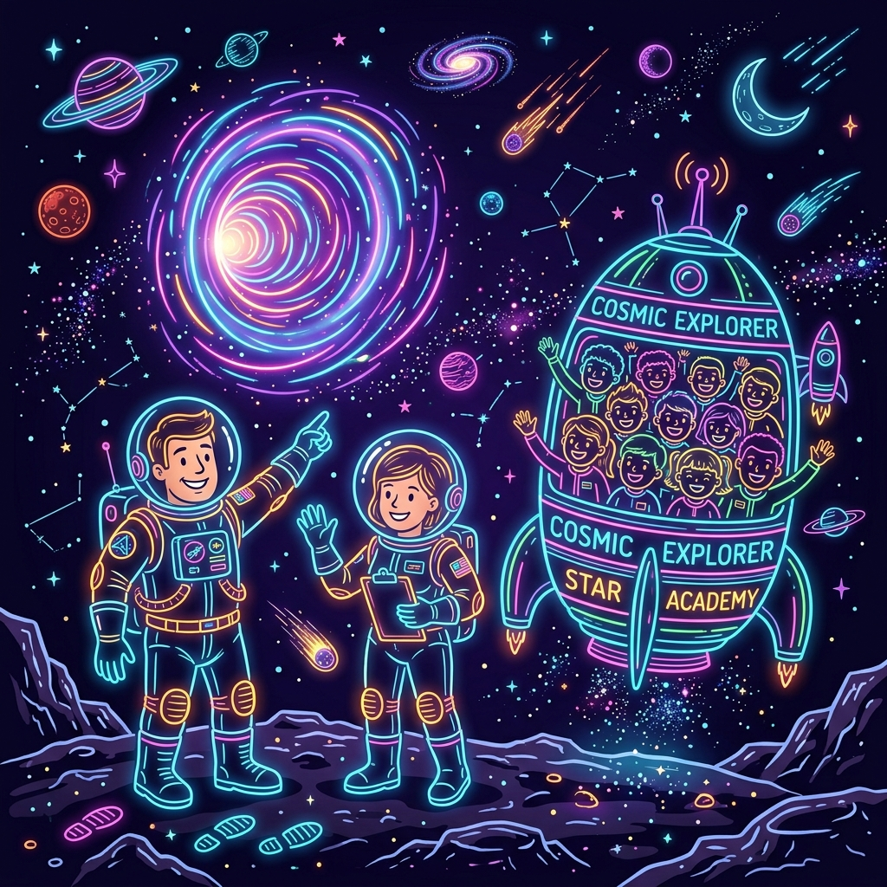
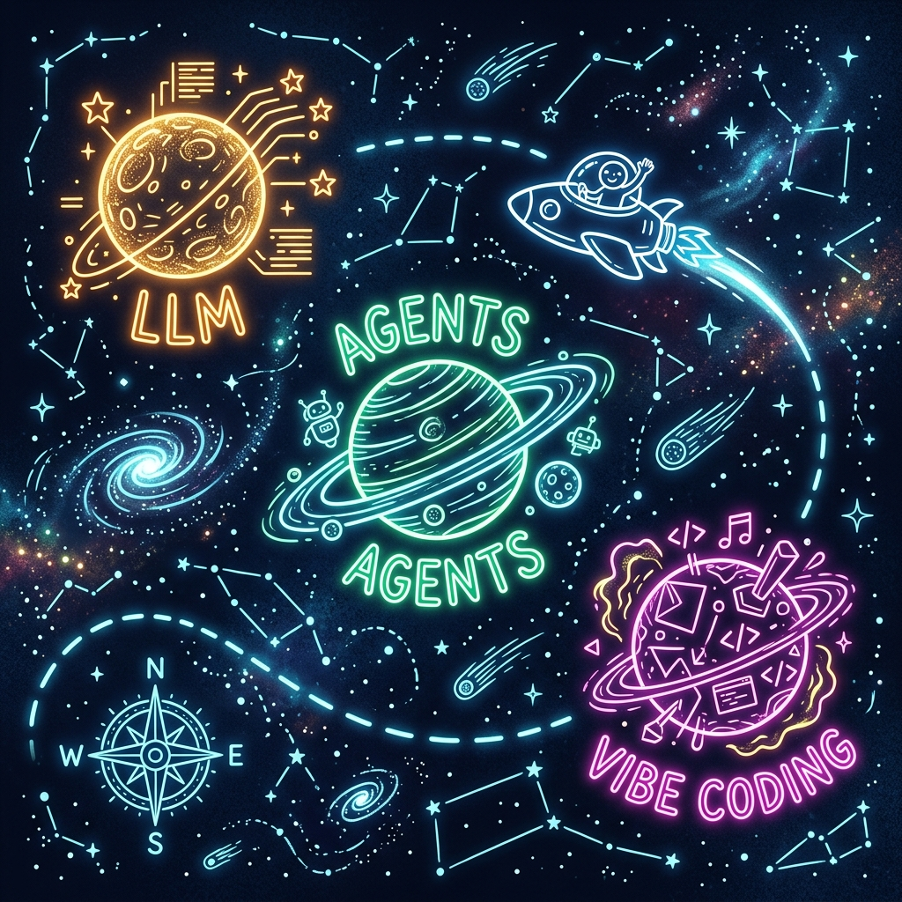
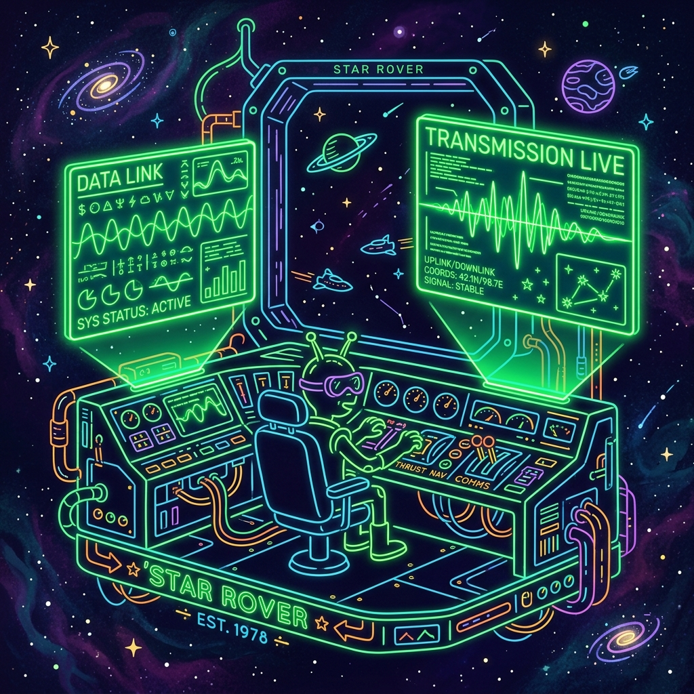
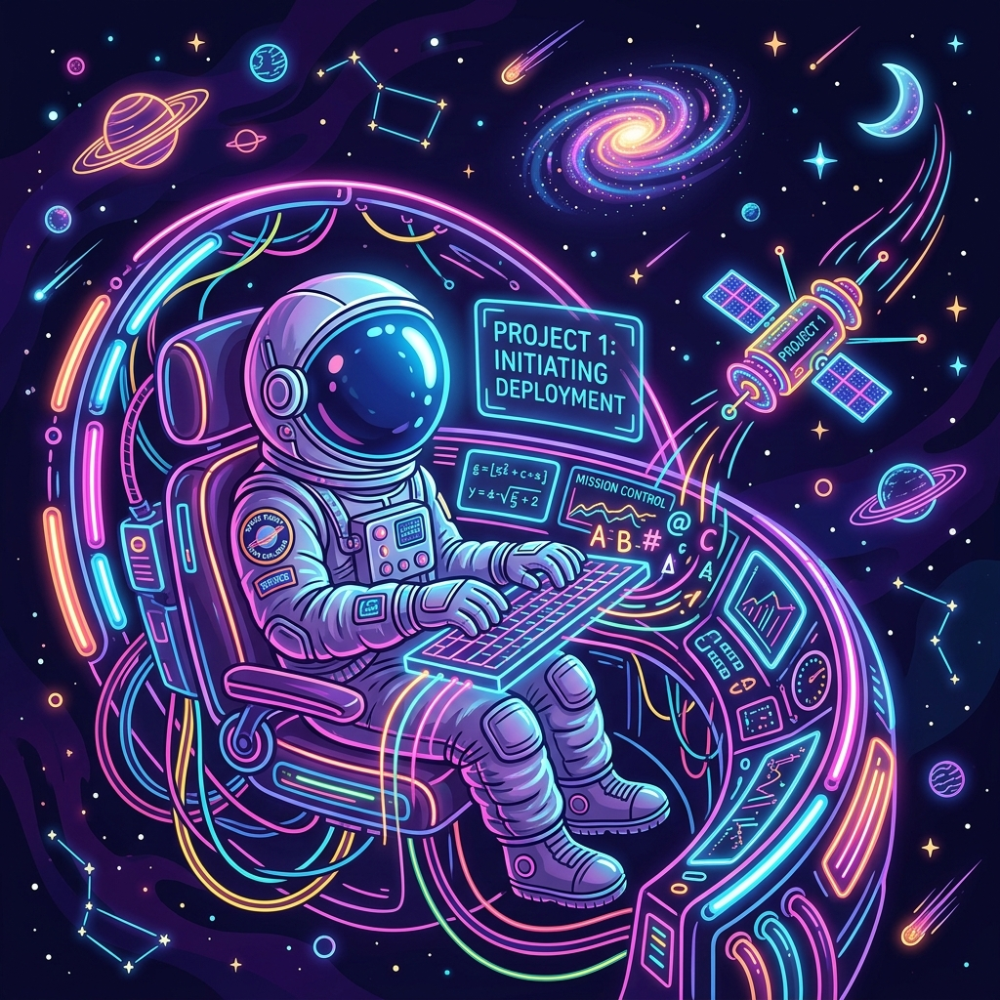
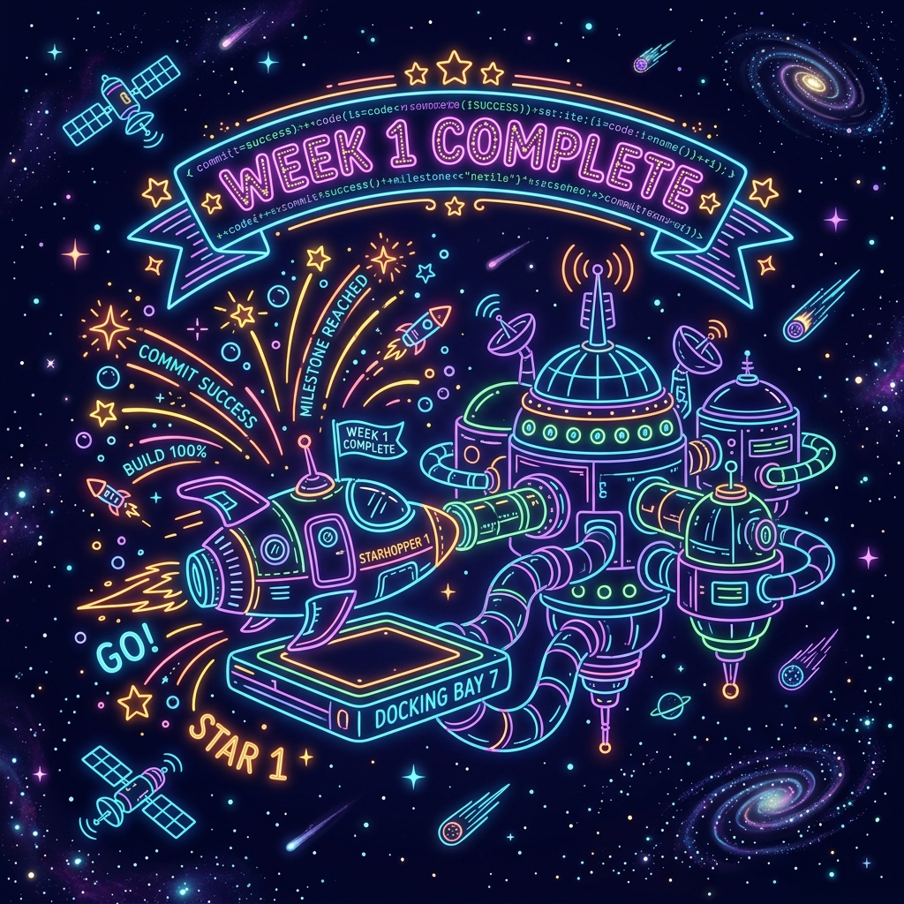

The Cosmic Spark
The old digital world is fracturing. Legacy servers, dusty floppy disks, and rigid procedural systems evaporate into stardust. A giant, glowing AI singularity is rewriting the very physics of technology. The world as we know it is being nuked—and gloriously reborn.

Meet the Flight Crew
As chaos reigns below, two legendary flight commanders step forward. Instructors Aishwarya and Aravind gather a crew of eager student-astronauts. Buckling everyone into the Voyager-1 command deck, they calibrate the sensors, point toward a shimmering wormhole, and ignite the hyperdrive into deep AI Space.
Navigating the AI Celestial Map
Our ship charts a course through massive, swirling planetary bodies representing the new AI frontier. Hover or click on each planet to scan its logs and retrieve core learning data.

Select a Space Object
Click on any planetary marker on the map to display telemetry logs, architectural notes, and tactical skills acquired at that coordinate.
Cosmic Transmissions
Comms crackle to life. Two legendary space-farers beam advanced training signals from their coordinates in the cosmos:
Dominik Kundel
OpenAI Deep Space IntelBeamed down advanced tactical knowledge on frontier API integration, model optimization, and building robust LLM architectures.
Ethan Carlson
Whisperflow Comm NetworksShared battle-tested templates for speech-to-text processing, streaming pipelines, and orchestrating workflows under latency constraints.


The Test Flight: FreightcarchecK
Armed with natural language prompts and a desire to tackle real-world logistics hazards, we built FreightcarchecK—a web-based manifest viewer designed for freight train crews, conductors, and first responders. It transforms dense, text-heavy train consists (manifests) into an at-a-glance visual dashboard. When an emergency strikes—like a derailment, stuck brakes, or track fire—crews must scan lists for miles-long, 18,000-ton trains to find hazmat positions. FreightcarchecK answers where the hazmat is, what class, and how heavy it is in seconds, before the phone even rings.
Cohort Knowledge Archive
Welcome to the Voyager-1 Data Core. Tap into the virtual memory modules below to scan and retrieve key learnings, architectural guidelines, and system principles mapped during Week 1 of our flight.
Select any category chip above to fetch its vocabulary nodes. Click on individual nodes to decrypt their core definitions.
Orbit Established

Captain's Log: Week 1 Complete
Voyager-1 has successfully completed its initial orbit. Let's review our telemetry dashboard: